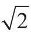
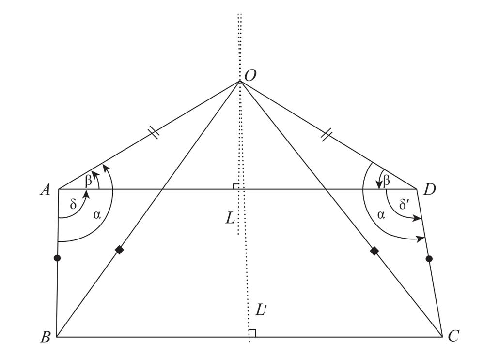

看起来，神经心理学的实证数据以庞加莱喜闻乐见的一种方式为直觉主义提供了支持，然而该立场与一种极端的直觉主义存在明确的区别，这种极端直觉主义的代表人是荷兰数学家鲁伊兹·布劳威尔（Luitzen Brouwer）。据他的许多同事称，布劳威尔在寻找纯粹基于直觉的数学这条路上走得太远了。他对那些经常用于数学证明的逻辑法则不屑一顾，因为他认为它们不符合任何简单直觉。出于一些在这里无法完全解释清楚的原因，他反对把排中律（the law of excluded middle）应用于无限集合。排中律指任何一个有意义的数学命题要么真要么非真，它是一个看起来完全不存在任何问题的经典逻辑法则。对排中律的否定推动了被称为“建构数学”（constructivist mathematics）的新分支的发展。
当然，究竟是经典数学还是布劳威尔的建构数学更加连贯和高效，这个判断并不是由我来决定的，而是取决于数学界，心理学家必须把自己限制在观察者的角色上。然而，在我看来，这两种理论均符合数学的广义定义：数学是对人类的基础直觉所进行的形式化和逐步细化。作为人类，我们一出生就具有数字、集合、连续变量、迭代、逻辑和空间几何的多重直觉体系。数学家们非常努力地试图对这些直觉进行改造，把它们转变为逻辑连贯的公理系统，然而却不能确保这些努力都可以最终实现。实际上，负责人类各个直觉的脑模块彼此独立地进行进化，它们更加注重在真实世界中的效率而非相互之间的全域连贯性。这种情况也许是导致数学家们在选择哪种直觉作为基础，哪种直觉需要废弃时产生分歧的原因。经典数学的基础是真实和虚假的二分法直觉（就像布劳威尔所指出的，在有限集合和无限集合方面它们确实有可能超出了我们的直觉）。相反，布劳威尔把有限建构或推理作为数学的首要基础原则。归根结底，布劳威尔版本的数学尽管有些时候被称为“直觉主义”，肯定并不比其他版本的数学更加接近人类直觉。它的基础也仅仅只是直觉体系中的一部分。
在这种格局下，仍然有待解释的问题是，数学家们如何以人类直觉的先天范畴为基础，把数学复杂化为更加抽象的符号构造物。与法国神经生物学家让-皮埃尔·尚热13的观点一样，我也认为这一过程是通过建构的进化以及紧随其后的选择来实现的。数学的进化是一个屡经历史证实的事实。数学并不是一个严格的知识体系，它的研究对象，甚至是它的推理模式都已经经历了很多代的进化。数学学科的庞大体系是通过实验和错误来确立的。有时最高的“脚手架”也会面临分崩离析的危险，它的瓦解以及紧跟其后的重建永无止境地循环。任何数学建构物的地基都根植于像集合、数字、空间、时间或逻辑这样的基础直觉。这些直觉几乎从来没有受到过质疑，它们属于人类大脑创造出的最不可否认的表征。数学可以被描述为这些直觉的逐步形式化。这一过程的目的是使这些直觉更加连贯、相互兼容、更好地符合我们对于外部世界的经验。
对数学研究对象的选择，以及对它们是否能够传播到下一代的判断，都由多重标准所决定。在纯数学领域，没有矛盾、考究、简明是保证数学建构物保存下来的中心品质。在应用数学领域，多了一个重要标准：数学建构物对客观物理世界的适用性。年复一年，那些自相矛盾、不考究或者没有用处的数学建构物被无情地淘汰。只有最符合标准的才经得起时间的考验。
第4章中，在考察数字符号的进化历程时，我们第一次见证了在数学中选择如何发生。我们远古的祖先可能仅仅为数字1、2和3确定了符号。在此基础上，许多新的数字符号相继被创造出来：从指向身体的计数法，到对10以内数字的命名，最终形成以加法和乘法规则为基础的复杂数字语法体系；在数字符号的书写方面，从最初的刻痕符号，到可以相加的计数法，最后出现了十进制的位值表达法。在此过程中，数字符号在可读性、简洁性和数字的表达力上，持续发生着微小的进步。
另一个相似的演化史是实数概念的连续变化。在毕达哥拉斯的时代，只有整数和整数的比值被认为是数字。然而随着正方形对角线不可公度性（noncommensurability）被发现，即

不能被描述为两个整数的比值，无数类似的无理数被建构出来。在长达2 000多年的时间中，数学家们一直在努力寻找一个适合无理数的形式系统。有些尝试是错误的，如无穷小量，表面上看是解决了问题，实则充满矛盾，有些尝试不过是原地踏步。终于，戴德金的研究为实数集合提供了一个令人满意的定义。根据我所支持的演化的观点，数学是一种人类建构物，因此也必然是一种不完美的可以修改的产物。这种结论似乎令人吃惊。数学被这样纯粹的光环所围绕，常被誉为“严谨的圣殿”。数学家自己也惊叹于数学原理的强大。我们不都轻易地忽略了数学学科正式诞生之前长达5 000年的人类努力吗？
数学通常被认为是唯一一门积累的科学，它所取得的成果永远不会被质疑或修改。然而，回顾一下过去的数学书籍，我们就能发现许多反例。随着二次、三次和四次多项式方程通用解法的出现，大量书籍被废弃。曾经被认为正确有效的命题，也可能被下一代的数学家判断为不够充分，或是彻头彻尾的错误。更加不可思议的是，一个无限累加的算式“1-1+1-1+1……”无限地重复交替减1和加1的运算，竟然迷惑了数学家1个多世纪。今天，任何一个大学生都可以证明出这个算式不存在有意义的值，它在0和1之间振荡。然而在1713年，像莱布尼兹这样有才华的数学家竟证明出这个无限算式等于1/2，这当然是错误的。
对于聪明的数学家们在几十年中都无法发现这个推断的错误之处，如果你还是觉得难以相信，那就花点儿时间解决一下图9-1描述的问题，只需要很少的几个步骤就可以证明，任何两条直线相交成直角。当然这个证明是错误的，然而其中的错误却隐藏得如此巧妙，人们很可能花上几个小时的时间也无法成功地找到它。更不用说那些多达数百页数学期刊的证明。全世界的学术界已经收到了很多关于费马大定理的错误证明，哪怕是安德鲁·怀尔斯（Andrew Wiles）提出的第一个力证也包含了一个不正确的命题，他花费了将近1年的时间对此进行修订。我们又要如何看待近期那些需要计算机对几十亿次组合进行彻底检验的证明呢？有一些数学家反对计算机程序的参与，因为他们担心无法证明这些程序是万无一失的。直至现在，数学学科的宏伟大厦还没有完全稳固。我们无法保证其中的一些部分不会像莱布尼兹的无限算式一样在几代之后被否决。

在下面这个证明中，尽管每一步看起来都很正确，最终的结果却明显是错误的，因为它证明了图中任何一个角都是直角。你能看出错误在哪里吗？
“证明：ABCD是一个四边形，边AB和边CD相等，其中一个角δ是直角，角δ= BAD。角δ′= ADC，它可以任意改变，现在需要证明的是ADC无论在任何情况下都等于直角δ。
做线段AD的中垂线L，线段BC的中垂线L′，L和L′的交点为O。
通过这样的构建，O到A和D的距离相等（OA=OD），O到B和C的距离也相等（OB=OC），因为AB=CD，三角形OAB和三角形ODC三条边均相等，因此是相似三角形，因此它们的角相等： BAO= ODC=α。三角形OAD是等腰三角形，因为 DAO= ODA=β。
因为δ= BAD= BAO- DAO=α-β；δ′= ADC= ODC- ODA=α-β，意味着δ=δ′。证明完毕。”
错误在哪里？答案见第357页。
图9-1 关于任何两条直线相交成直角的错误证明
没有人能够否认数学研究是一项极为困难的活动。我把这种困难归因于人脑的结构，它对于长链式的符号操作适应性非常差。在孩童时期，我们在学习乘法口诀表和多位数计算法则时，就已经体验到了严峻的困难。在进行重复减3任务时，脑区活动图像显示了顶叶和额叶区域强烈的双侧激活。如果像减法这样基础的操作都已经把我们的神经网络调用到了这种程度，我们在证明一个新奇的、确实有难度的数学猜想时所需要的专注力和专业知识的水平就不难想象了。这样想来，错误和不精确会经常破坏数学体系也就不足为奇了。成千上万的数学家们的共同努力，加上长达几个世纪的积累和精炼，才促成了今日的成功。这个结论被法国数学家埃瓦里斯特·伽罗瓦（Évariste Galois）精辟地描述为：“这门科学是人脑的作品，注定只能进行研究而无法通晓，重在寻求真相的过程而不是结果。”